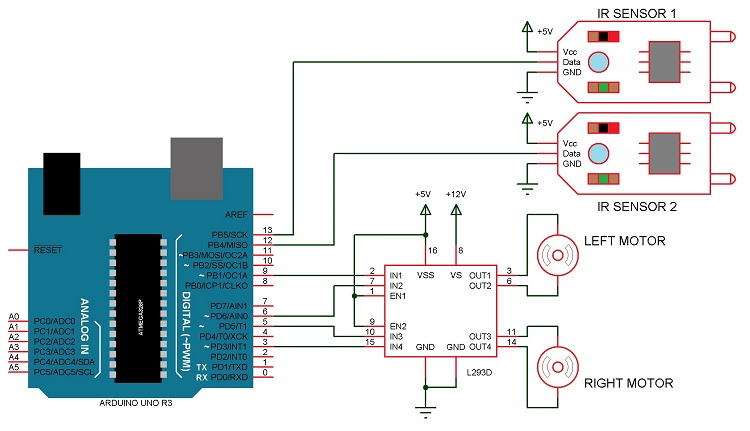

A Line Follower Robot, as the name suggests, is an automated guided vehicle, which follow a visual line embedded on the floor or ceiling. Usually, the visual line is the path in which the line follower robot goes and it will be a black line on a white surface but the other way (white line on a black surface) is also possible. Certain advanced Line Follower Robots use invisible magnetic field as their paths.
Line follower Robot is one of the first robots that beginners and students would get their first robotic experience with. In this project, we have designed a simple Line Follower Robot using Arduino and some other components.
1Arduino UNO (or Arduino Nano)
2.L293D Motor Driver IC
3.Geared Motors x 2
4.Robot Chassis
5.IR Sensor Module x 2
6.Black Tape (Electrical Insulation Tape)
7.Connecting Wires
8.Power supply
9.Battery Connector
10.Battery Holder
